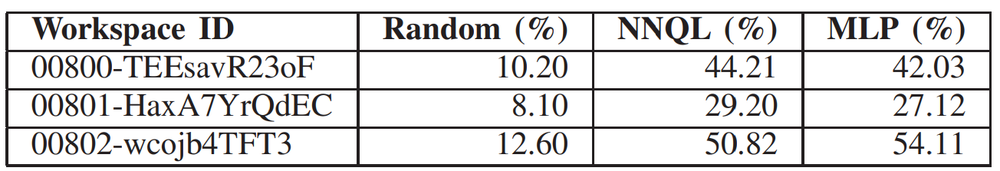

Point goal navigation (PGN) is a mapless naviga- tion approach that trains robots to visually navigate to goal points without relying on pre-built maps. Despite significant progress in handling complex environments using deep rein- forcement learning, current PGN methods are designed for single-robot systems, limiting their generalizability to multi- robot scenarios with diverse platforms. This paper addresses this limitation by proposing a knowledge transfer framework for PGN, allowing a teacher robot to transfer its learned navigation model to student robots, including those with un- known or black-box platforms. We introduce a novel knowledge distillation (KD) framework that transfers first-person-view (FPV) representations (view images, turning/forward actions) to universally applicable third-person-view (TPV) representations (local maps, subgoals). The state is redefined as reconstructed local maps using SLAM, while actions are mapped to subgoals on a predefined grid. To enhance training efficiency, we propose a sampling-efficient KD approach that aligns training episodes via a noise-robust local map descriptor (LMD). Although validated on 2D wheeled robots, this method can be extended to 3D action spaces, such as drones. Experiments conducted in Habitat-Sim demonstrate the feasibility of the proposed framework, requiring minimal implementation effort. This study highlights the potential for scalable and cross-platform PGN solutions, expanding the applicability of embodied AI systems in multi-robot scenarios.
Fig.1. Example of a robot’s movement trajectory. The red dot represents the starting point, the blue curve represents the movement path, and the green circle represents the goal area.
Fig. 2. We adopted a BEV (Bird’s Eye View) omnidirectional local map, as shown in the figure, with the priority of being independent of specific platforms.
Fig. 2. We adopted a BEV (Bird’s Eye View) omnidirectional local map, as shown in the figure, with the priority of being independent of specific platforms.
Table1：Table.1 PERFORMANCE RESULTS (ACHIEVEMENT RATE [%])
